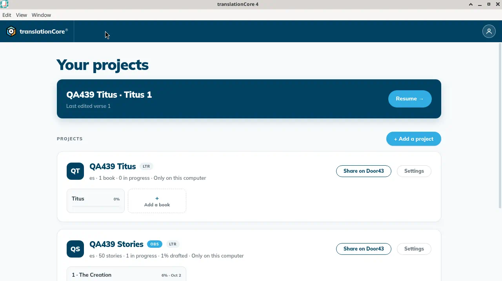
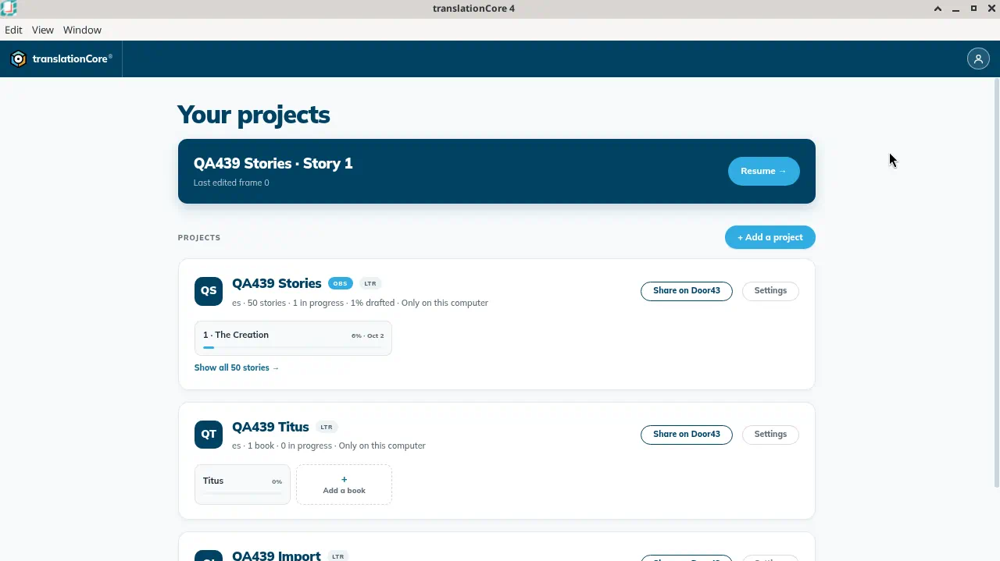
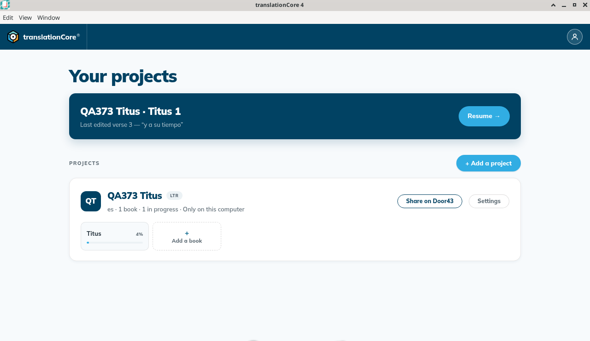
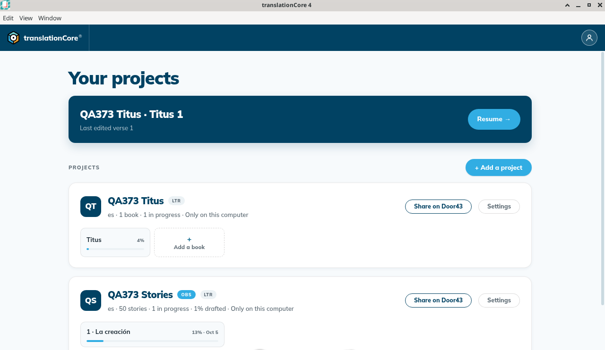
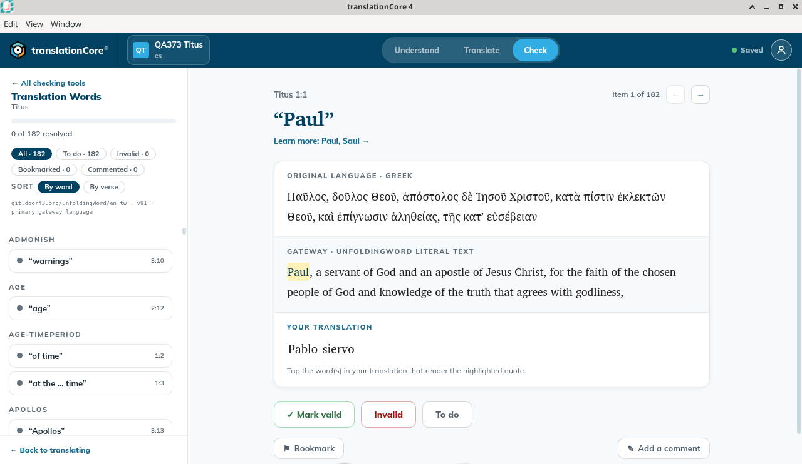

Resume where you left off
The Resume banner on Home takes you straight back to the book, chapter and mode where you last made a change — Understand, Translate, or the checking tool you were using — even after you close and restart the app.
Where in the app: Home — the dark blue Resume banner at the top, with the Resume → button
What it is
Home shows a dark blue banner at the top with the project name, the book and chapter (or the story), and what you last changed. For example:
- QA373 Titus · Titus 1 — Last edited verse 3 — "y a su tiempo" (after drafting verses)
- QA373 Titus · Titus 1 — Last edited verse 1 (after a checking decision on verse 1)
- QA373 Stories · Story 1 — Last edited frame 2 — "Al principio..." (after drafting a story)
Click the banner, or its Resume → button, to go straight back. tC4 opens the same place in the mode you last used: Understand, Translate, or Check with the same checking tool (for example Translation Words).
When to use it
Each time you come back to tC4.
Step by step
- Work in a project: draft a verse, write a comment, or decide a check item.
- Go back to Home (click the project name at the top left), or close tC4 and start it again.
- Click the banner, or its Resume → button.
- tC4 opens the same book and chapter, in Understand, Translate or Check — whichever you used last. In Check it reopens the same tool.
What you should see
- The banner names the project and the book and chapter (or story), and the last edit, for example QA373 Titus · Titus 1 and Last edited verse 3 — "y a su tiempo".
- Clicking it opens the same book and chapter (or story) in the mode you last used — Understand, Translate or Check — and in Check, the same checking tool.
- The banner follows your last change (a drafted verse or frame, a comment, or a checking decision). Only opening a book does not change it.
Screenshots

Screenshot comingHome on this build. The banner reads QA439 Titus · Titus 1, Last edited verse 1, with Resume. The Titus card under it says 0%.
img/gs-resume-1.png
Screenshot comingHome after working in stories. The banner reads QA439 Stories · Story 1, Last edited frame 0, with Resume. The stories card says 50 stories, 1 in progress, 1% drafted. The story 1 tile says 0% and Oct 2.
img/gs-resume-2.png
Screenshot comingOffline371 Home. The banner reads Offline371 · Titus 1, Last edited verse 1 — Paul, a servant of God. Resume was not clicked. Titus tile is 2%.
img/gs-resume-3.png
Screenshot comingBuild 79d3017: the banner reads QA373 Titus · Titus 1, Last edited verse 3 — y a su tiempo, with Resume →. Verses 2 and 3 had just been joined into the span 2-3, but the banner still names verse 3 (known issue).
img/gs-resume-4.png
Screenshot comingAfter a Translation Notes decision in Check, the banner reads QA373 Titus · Titus 1, Last edited verse 1.
img/gs-resume-5.png
Screenshot comingResume from that banner opened Titus in Check › Translation Words, the last tool used, at Paul (Titus 1:1, Item 1 of 182).
img/gs-resume-6.pngTips
- The banner follows your last change, not the last book you opened. If you open a book only to read it, the banner still shows the place you last changed. The project you opened last moves to the top of the list on Home.
- Each book tile also remembers where you were in that book, and its mode. Each story tile remembers the frame you last worked on.
- A checking decision counts as a change. After you mark an item in Check, the banner names that verse, and Resume returns to the checking tool.
- Known issue: After you join verses into a span and save the section, the banner can still name a verse that no longer exists on its own (for example "verse 3" after verses 2 and 3 became 2-3). Resume still opens the right chapter.
- Known issue: Resume into a story opens the story at the top, not at the frame named in the banner. Scroll down to the frame.
- Known issue: For a stories project, the frame number in the banner can change after you only decide check items (for example from frame 2 to frame 0, then frame 1), and the quote can disappear.
- The quote in the banner can stop in the middle of a word.
Known limits
- Resume is per computer. It does not follow you to another computer.